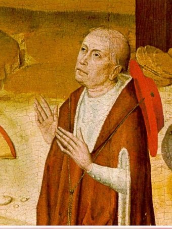
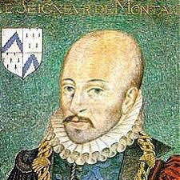
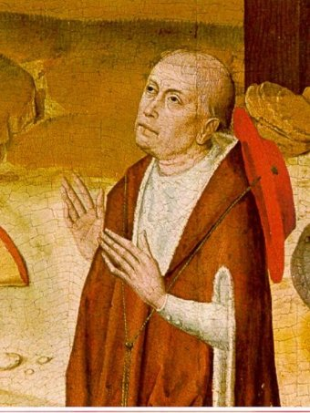
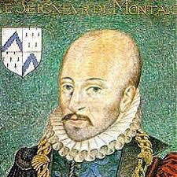
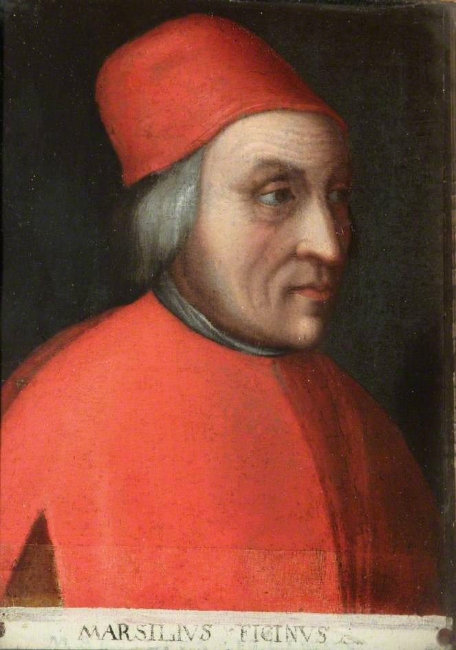
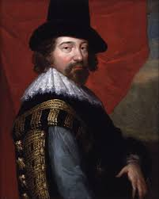
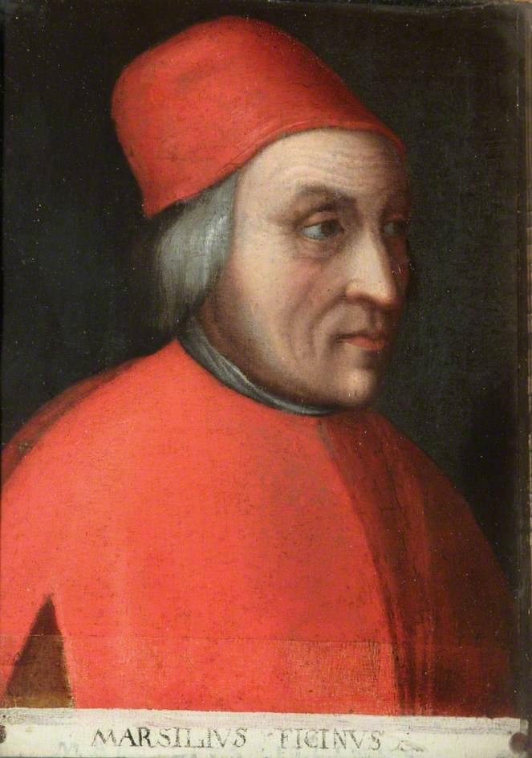
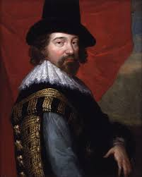

 




Tenía una visión pesimista y fatalista, en la cual los hombres no pueden oponerse a decretos de la fortuna pero sí aprovechar sus giros.
Para Cusa el cosmos es también infinito, ya que dice que al igual que Dios es infinito, el cosmos también es infinito. Estoy de acuerdo en este punto porque de acuerdo a algunas teorías en la actualidad el cosmos es infinito, pero esta idea de Cusa tendría sentido en cuestiones religiosas.
Montaigne descubre que el hombre ha olvidado su situación en el cosmos al estimarse por encima de todas las demás cosas. Por lo que se puede inferir que lo que opina es que el cosmos es tan grande que el humano no puede ser lo más importante, por lo que no le afectamos en su existencia.
Su concepto de cosmos era totalmente diferente al de la época ya que en la época del renacimiento se creía en un universo cosmogónico lo cual años más tarde el demostraría que realmente estamos en un universo heliocéntrico, postulados que provocaría su desacreditación por la iglesia y su posible ejercitación.
En la Divina Comedia, representa el infierno como si fuera una cavidad cónica que llega hasta el centro de la Tierra. Los lugares de castigo están estratificados en círculos concéntricos de diámetro decreciente y los más cercanos al centro se reservan a los mayores pecadores. El purgatorio es una gran montaña cónica, que sale desde el vasto océano en un punto diametralmente opuesto a Jerusalén, el centro de la Tierra sólida. Pasando a través de las siete terrazas de la montaña se puede llegar hasta las esferas celestes. Hay diez esferas: las de la Luna, Mercurio, Venus, el Sol, Marte, Júpiter, Saturno, las estrellas fijas, el primum mobile y por último el empireo inmobíle, morada de la divinidad. Las nueve esferas interiores son movidas por las tres tríadas de inteligencias angélicas: los Serafines mueven el primum mobile, los Querubines las estrellas fijas, y así sucesivamente hasta llegar a la esfera de la Luna, de la cual se encargan los ángeles.
Describe el orden del cosmos en un orden fijo: Dios, los ángeles, el alma, las cualidades y cuerpos; las almas se dividen en: alma del mundo, almas de las esferas y almas de los animales. Todas las partes del mundo y sus elementos son recíprocamente contrarios y, a la vez, constituyen una unidad.
Consideraba como necesidad estar en armonía con todo lo que nos rodeara y saber cómo obedecer a esto (lo natural sobre todo) ya que, como ya fue mencionado antes, este consideraba que la naturaleza no podía ser manipulable y se tenía que a prender a obedecerla.
Par él todo cuestionamiento estaba perfecto sin alejarse de lo que se sabía que era un pensamiento erróneo pero sin dejar lo que se tenía por Concreto ahora. Por lo tanto él no será un Científico observando estrellas, será un Científico observando una Humanidad decadente apagada y sin luz dentro de su Mundo.